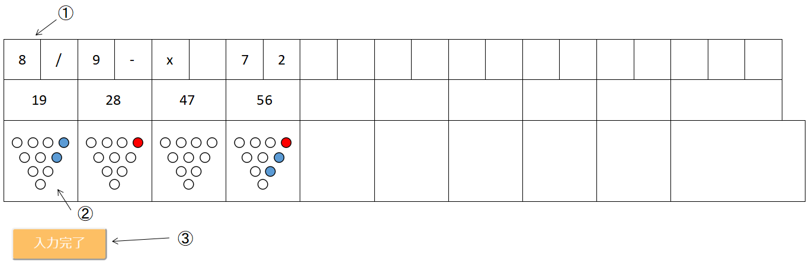

スコアを入力し、ボウリングの傾向を分析します
スコア分析画面へ移動
スコア分析画面へ移動
※スコア登録画面
①1ゲームのスコアを入力フォームに入力します
スペアは「/」、ストライクは「x」を入力。2投目のミスは「-」または「0」を入力
スコアは自動で計算されます
②残ったピンをここに入力。2投目で取れた場合は再度クリックする
③入力が完了すれば、「入力完了」のボタンをクリック
登録したスコアの分析結果がここに出ます
①スコア平均:総合アベレージ ②ストライク率:1ゲームでのストライク率 ③連続ストライク率:ストライクの後にストライクを取る確率
④スペア率:1ゲームでのスペア率 ⑤スペア成功率:スペアを取る確率 ⑥スプリット率:1ゲームでスプリットが出る確率
⑦得意パターン:スペア成功率の高い配置 ⑧苦手パターン:スペア成功率の低い配置